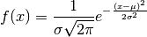

Template for Sphinx Commands¶
This template shows how to use several commands available in Sphinx for creating pretty documentation, including code, math, and figures.
The equation for a normal distribution is

In R, it can be approximated using the following commands:
> data <- rnorm(100000)
> hist(data, breaks = 50)
The figure produced is shown below.

Figure 1: Approximation of the normal distribution